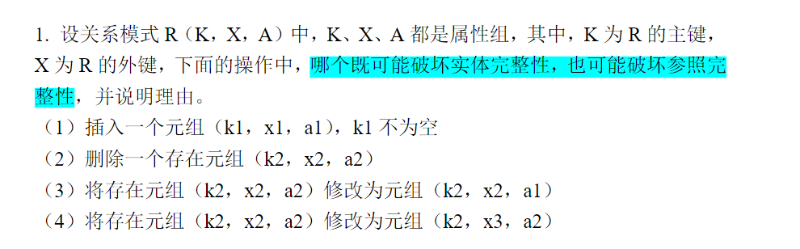
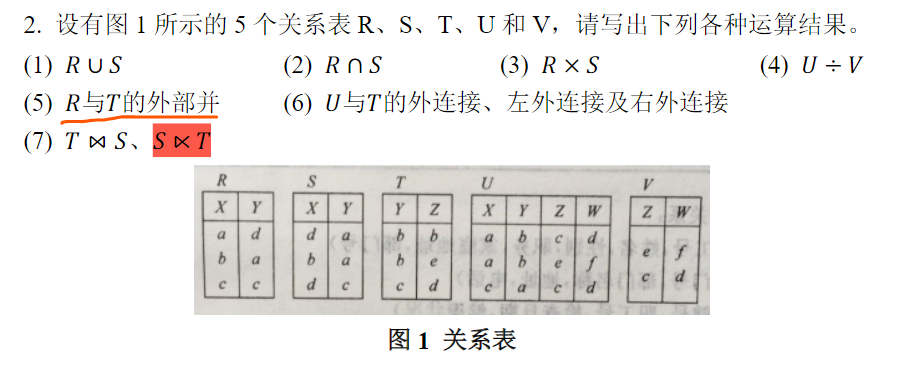
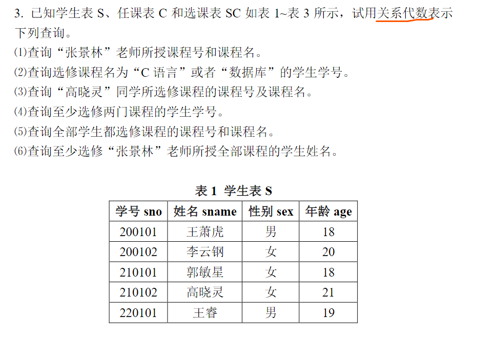
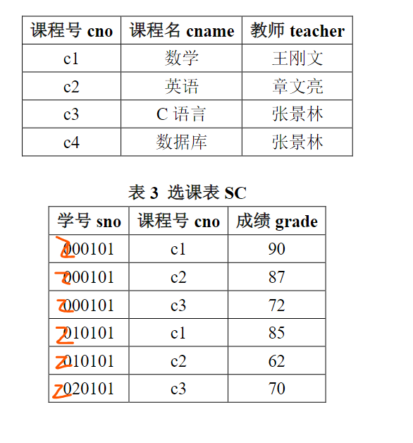
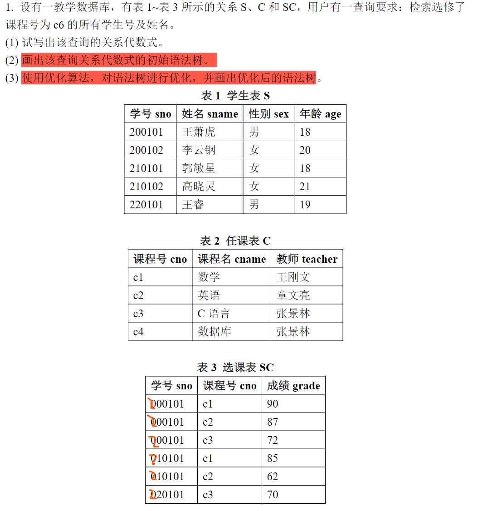
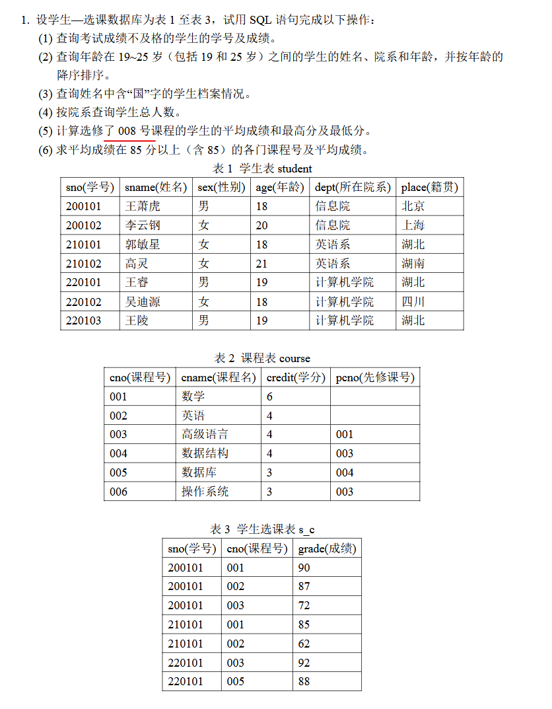
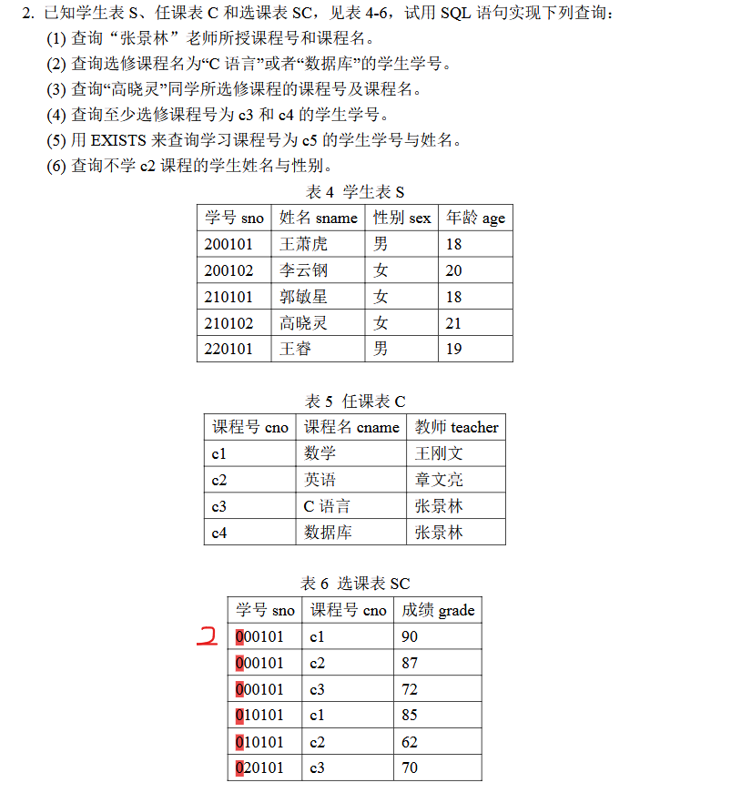
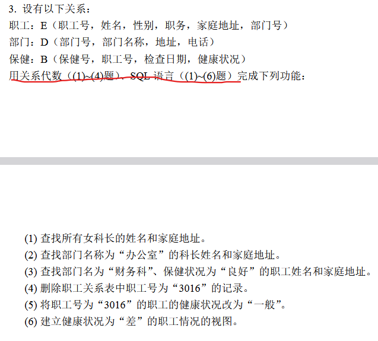
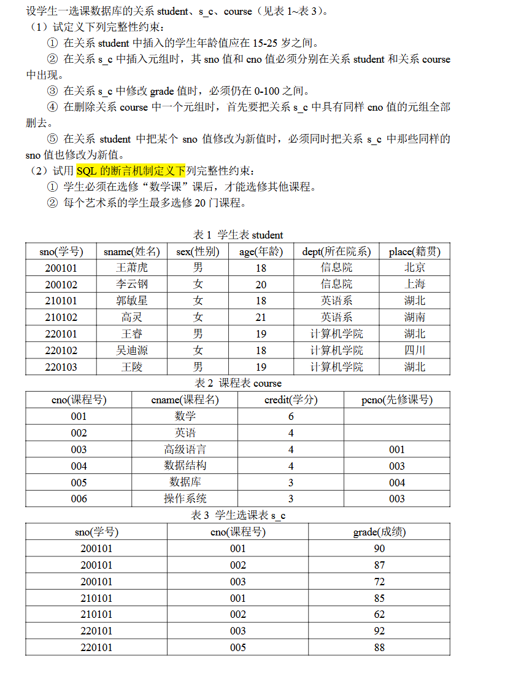

作业
第一次作业

（1）题目只说明了k1不为空，若k1与关系R中某个已有主键值重复，就会触发主键冲突，于是 实体完整性被破坏；此外，若x1在它所参照的关系中找不到对应主键值，就会触发外键失配，导致 参照完整性被破坏
（2）删除操作将导致元组直接消失，自身的主键约束也退出讨论范围，所以实体完整性问题无法讨论；对于参照完整性，只有在别的元组或别的关系把k1当作被参照键时，删除它才可能造成悬空引用
（3）把 \((k2, x2, a2)\) 改成 \((k2, x2, a1)\)，改动发生在普通属性 \(A\) 上，主键 \(K\) 和外键 \(X\) 都保持原值，因此这两类完整性约束都处于原来的状态。
（4）把 \((k2, x2, a2)\)改成 \((k2, x3, a2)\)，主键 \(K\) 维持为 \(k2\)，实体完整性这一侧保持原状；外键从 \(x2\) 改成了 \(x3\)，若 \(x3\) 在被参照关系中找不到对应主键值，就会破坏参照完整性。
综上，发生改变的只有（1）

将图中关系写为标准形式：
(1)
(2)
(3)将属性结果写为 \((R.X,R.Y,S.X,S.Y)\)
(4)在 \(U\) 里，\((a,b)\) 同时对应了 \(V\) 中的两组 \((Z,W)\)，也就是 \((c,d)\) 和 \((e,f)\)。于是
(5)外部并后按属性 \((X,Y,Z)\) 书写，空缺位置记为 \(\text{NULL}\)：
(6)先写全连接，结果属性记为 \((X,Y,Z,W)\)
再写左外连接：
然后是右外连接：
(7)


取
分别表示学生表、任课表和选课表
（1）直接从课程表中筛出教师为“张景林”的元组，再投影出课程号和课程名
(2)先在课程表中选出课程名为“C语言”或“数据库”的课程，再和选课表按 \(cno\) 连接，最后投影出学生学号。
(3)先从学生表里找出“高晓灵”，再接到她的选课记录，最后和课程表连接，于是能得到她所选课程的课程号和课程名。
(4)设
其中，\(\rho\) 表示重命名，则
(5)先把“全部学生的学号集合”取出来，再让选课关系对它做除法：
(6)先取出“张景林”授课的课程号集合，再用选课表去除：
第二次作业

（1）关系代数式
作业三

（1）查询考试成绩不及格的学生的学号及成绩时，只需要在成绩表中筛选出低于及格线的记录。及格线按常规取 60，因此直接对 grade 加条件：
（2）查询年龄在 19 到 25 岁之间的学生，需要先在学生表中限定年龄区间。区间是闭区间，可以用 BETWEEN 表达，同时结果需要按照年龄递增排列，因此增加排序条件：
（3）查询姓名中包含“国”字的学生，本质是字符串的子串匹配。SQL 中通过 LIKE 配合通配符 % 实现：
（4）按院系统计学生人数，需要先把学生按照 dept 分组，然后在每个分组内统计记录数。这里使用 COUNT(*) 表示该院系的总人数：
（5）计算选修某一课程的学生成绩统计量时，逻辑是先筛选出该课程的所有成绩，再在这一集合上做聚合计算。平均值、最大值、最小值分别由 AVG、MAX、MIN 完成：
SELECT
AVG(grade) AS avg_grade,
MAX(grade) AS max_grade,
MIN(grade) AS min_grade
FROM s_c
WHERE cno = '008';
（6）要求得到平均成绩达到 85 分及以上的课程，需要先按课程编号分组，再对每组计算平均成绩。由于筛选条件作用在聚合结果上，因此使用 HAVING：

（1）查询“张景林”老师所授课程号和课程名。
（2）查询选修课程名为“C语言”或者“数据库”的学生学号。
（3）查询“高晓灵”同学所选修课程的课程号及课程名。
SELECT C.cno, C.cname
FROM S
JOIN SC ON S.sno = SC.sno
JOIN C ON SC.cno = C.cno
WHERE S.sname = '高晓灵';
（4）查询至少选修课程号为 c3 和 c4 的学生学号。
（5）用 EXISTS 子查询查询课程号为 c5 的学生学号与姓名。
SELECT S.sno, S.sname
FROM S
WHERE EXISTS (
SELECT *
FROM SC
WHERE SC.sno = S.sno
AND SC.cno = 'c5'
);
（6）查询不学 c2 课程的学生姓名与性别。
SELECT S.sname, S.sex
FROM S
WHERE NOT EXISTS (
SELECT *
FROM SC
WHERE SC.sno = S.sno
AND SC.cno = 'c2'
);

（1）查找所有女科长的姓名和家庭地址。
（2）查找部门名称为“办公室”的科长姓名和家庭地址。
（3）查找部门名为“财务科”、保健状况为“良好”的职工姓名和家庭地址。
SELECT E.姓名, E.家庭地址
FROM E
JOIN D ON E.部门号 = D.部门号
JOIN B ON E.职工号 = B.职工号
WHERE D.部门名称 = '财务科' AND B.健康状况 = '良好';
（4）删除职工关系表中职工号为“3016”的记录。
（5）将职工号为“3016”的职工的健康状况改为“一般”。
（6）建立健康状况为“差”的职工情况的视图。
CREATE VIEW 差健康职工情况 AS
SELECT E.*, B.保健号, B.检查日期, B.健康状况
FROM E
JOIN B ON E.职工号 = B.职工号
WHERE B.健康状况 = '差';
作业四

（1）完整性约束的定义
① 学生年龄在 15–25 岁之间，这属于单表属性范围约束，可以直接定义在 student 表中：
② s_c 中的 sno 和 cno 必须分别在 student 和 course 中存在，这本质是参照完整性约束，对应外键：
ALTER TABLE s_c
ADD CONSTRAINT fk_sno
FOREIGN KEY (sno) REFERENCES student(sno);
ALTER TABLE s_c
ADD CONSTRAINT fk_cno
FOREIGN KEY (cno) REFERENCES course(cno);
③ 修改 grade 时必须在 0–100 之间，这仍然是单属性范围约束：
④ 删除 course 中某个元组时，需要先删除 s_c 中对应的记录，这属于级联删除行为。可以在定义外键时直接指定：
ALTER TABLE s_c
DROP CONSTRAINT fk_cno;
ALTER TABLE s_c
ADD CONSTRAINT fk_cno
FOREIGN KEY (cno) REFERENCES course(cno)
ON DELETE CASCADE;
⑤ 修改 student 中的 sno 时，需要同步更新 s_c 中的 sno，这是级联更新：
ALTER TABLE s_c
DROP CONSTRAINT fk_sno;
ALTER TABLE s_c
ADD CONSTRAINT fk_sno
FOREIGN KEY (sno) REFERENCES student(sno)
ON UPDATE CASCADE;
（2）断言或触发器实现的约束
① 学生必须先选修“数学”课程后，才能选修其他课程。
CREATE TRIGGER trg_math_first
BEFORE INSERT ON s_c
FOR EACH ROW
BEGIN
DECLARE cnt INT;
IF NEW.cno <> '001' THEN
SELECT COUNT(*) INTO cnt
FROM s_c
WHERE sno = NEW.sno AND cno = '001';
IF cnt = 0 THEN
SIGNAL SQLSTATE '45000'
SET MESSAGE_TEXT = '必须先选修数学课';
END IF;
END IF;
END;
② 每个艺术系的学生最多选修 20 门课程。
CREATE TRIGGER trg_max_course
BEFORE INSERT ON s_c
FOR EACH ROW
BEGIN
DECLARE cnt INT;
DECLARE dept_name VARCHAR(50);
SELECT dept INTO dept_name
FROM student
WHERE sno = NEW.sno;
IF dept_name = '艺术系' THEN
SELECT COUNT(*) INTO cnt
FROM s_c
WHERE sno = NEW.sno;
IF cnt >= 20 THEN
SIGNAL SQLSTATE '45000'
SET MESSAGE_TEXT = '艺术系学生最多选修20门课程';
END IF;
END IF;
END;